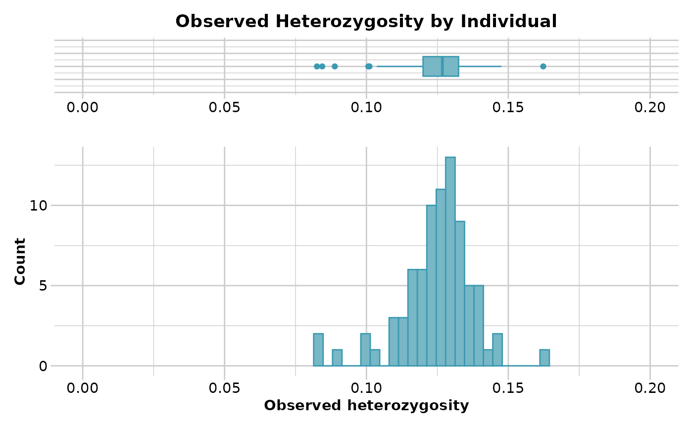
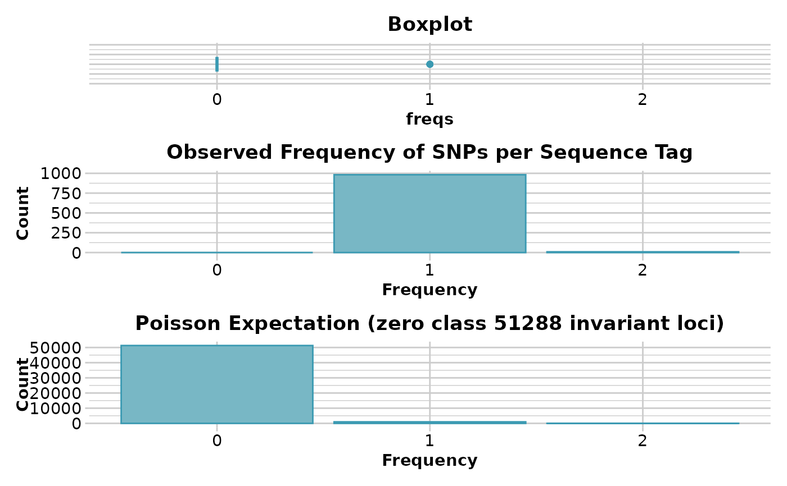
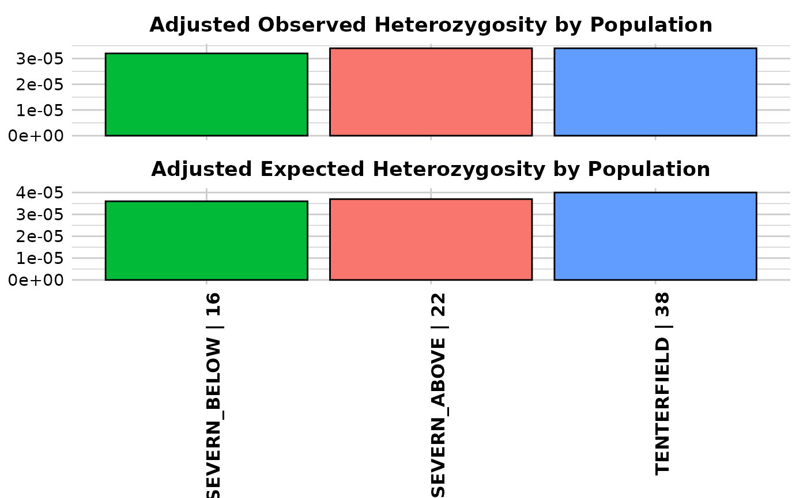

Reports observed, expected and unbiased heterozygosities and FIS (inbreeding coefficient) by population or by individual from SNP data
Source:R/gl.report.heterozygosity.r
gl.report.heterozygosity.RdCalculates the observed, expected and unbiased expected (i.e. corrected for sample size) heterozygosities and FIS (inbreeding coefficient) for each population or the observed heterozygosity for each individual in a genlight object.
gl.report.heterozygosity(
x,
method = "pop",
n.invariant = 0,
nboots = 0,
conf = 0.95,
CI.type = "bca",
ncpus = 1,
plot.display = TRUE,
plot.theme = theme_dartR(),
plot.colors.pop = gl.colors("dis"),
plot.colors.ind = gl.colors(2),
error.bar = "SD",
save2tmp = FALSE,
verbose = NULL
)Arguments
- x
Name of the genlight object containing the SNP [required].
- method
Calculate heterozygosity by population (method='pop') or by individual (method='ind') [default 'pop'].
- n.invariant
An estimate of the number of invariant sequence tags used to adjust the heterozygosity rate [default 0].
- nboots
Number of bootstrap replicates to obtain confident intervals [default 0].
- conf
The confidence level of the required interval [default 0.95].
- CI.type
Method to estimate confident intervals. One of "norm", "basic", "perc" or "bca" [default "bca"].
- ncpus
Number of processes to be used in parallel operation. If ncpus > 1 parallel operation is activated,see "Details" section [default 1].
- plot.display
Specify if plot is to be produced [default TRUE].
- plot.theme
Theme for the plot. See Details for options [default theme_dartR()].
- plot.colors.pop
A color palette for population plots or a list with as many colors as there are populations in the dataset [default gl.colors("dis")].
- plot.colors.ind
List of two color names for the borders and fill of the plot by individual [default gl.colors(2)].
- error.bar
statistic to be plotted as error bar either "SD" (standard deviation) or "SE" (standard error) or "CI" (confident intervals) [default "SD"].
- save2tmp
If TRUE, saves any ggplots and listings to the session temporary directory (tempdir) [default FALSE].
- verbose
Verbosity: 0, silent or fatal errors; 1, begin and end; 2, progress log; 3, progress and results summary; 5, full report [default NULL, unless specified using gl.set.verbosity].
Value
A dataframe containing population labels, heterozygosities, FIS, their standard deviations and sample sizes
Details
Observed heterozygosity for a population takes the proportion of heterozygous loci for each individual then averages over the individuals in that population. The calculations take into account missing values. Expected heterozygosity for a population takes the expected proportion of heterozygotes, that is, expected under Hardy-Weinberg equilibrium, for each locus, then averages this across the loci for an average estimate for the population.
Expected heterozygosity is calculated using the correction for sample size following equation 2 from Nei 1978.
Observed heterozygosity for individuals is calculated as the proportion of loci that are heterozygous for that individual.
Finally, the loci that are invariant across all individuals in the dataset
(that is, across populations), is typically unknown. This can render
estimates of heterozygosity analysis specific, and so it is not valid to
compare such estimates across species or even across different analyses. This
is a similar problem faced by microsatellites. If you have an estimate of the
number of invariant sequence tags (loci) in your data, such as provided by
gl.report.secondaries, you can specify it with the n.invariant
parameter to standardize your estimates of heterozygosity.
NOTE: It is important to realise that estimation of adjusted heterozygosity requires that secondaries not to be removed.
Heterozygosities and FIS (inbreeding coefficient) are calculated by locus within each population using the following equations:
Observed heterozygosity (Ho) = number of homozygotes / n_Ind, where n_Ind is the number of individuals without missing data.
Observed heterozygosity adjusted (Ho.adj) <- Ho * n_Loc / (n_Loc + n.invariant), where n_Loc is the number of loci that do not have all missing data and n.invariant is an estimate of the number of invariant loci to adjust heterozygosity.
Expected heterozygosity (He) = 1 - (p^2 + q^2), where p is the frequency of the reference allele and q is the frequency of the alternative allele.
Expected heterozygosity adjusted (He.adj) = He * n_Loc / (n_Loc + n.invariant)
Unbiased expected heterozygosity (uHe) = He * (2 * n_Ind / (2 * n_Ind - 1))
Inbreeding coefficient (FIS) = 1 - (mean(Ho) / mean(uHe))
Function's output Output for method='pop' is an ordered barchart of observed heterozygosity, unbiased expected heterozygosity and FIS (Inbreeding coefficient) across populations together with a table of mean observed and expected heterozygosities and FIS by population and their respective standard deviations (SD). In the output, it is also reported by population: the number of loci used to estimate heterozygosity(n.Loc), the number of polymorphic loci (polyLoc), the number of monomorphic loci (monoLoc) and loci with all missing data (all_NALoc). Output for method='ind' is a histogram and a boxplot of heterozygosity across individuals. Plots and table are saved to the session temporary directory (tempdir) Examples of other themes that can be used can be consulted in
Error bars
The best method for presenting or assessing genetic statistics depends on the type of data you have and the specific questions you're trying to answer. Here's a brief overview of when you might use each method:
1. Confidence Intervals ("CI"):
- Usage: Often used to convey the precision of an estimate.
- Advantage: Confidence intervals give a range in which the true parameter (like a population mean) is likely to fall, given the data and a specified probability (like 95
- In Context: For genetic statistics, if you're estimating a parameter, a 95 lies.
2. Standard Deviation ("SD"):
- Usage: Describes the amount of variation from the average in a set of data.
- Advantage: Allows for an understanding of the spread of individual data points around the mean.
- In Context: If you're looking at the distribution of a quantitative trait (like height) in a population with a particular genotype, the SD can describe how much individual heights vary around the average height.
3. Standard Error ("SE"):
- Usage: Describes the precision of the sample mean as an estimate of the population mean.
- Advantage: Smaller than the SD in large samples; it takes into account both the SD and the sample size.
- In Context: If you want to know how accurately your sample mean represents the population mean, you'd look at the SE.
Recommendation:
- If you're trying to convey the precision of an estimate, confidence intervals are very useful.
- For understanding variability within a sample, standard deviation is key.
- To see how well a sample mean might estimate a population mean, consider the standard error.
In practice, geneticists often use a combination of these methods to analyze and present their data, depending on their research questions and the nature of the data.
Confident Intervals
The uncertainty of a parameter, in this case the mean of the statistic, can be summarised by a confidence interval (CI) which includes the true parameter value with a specified probability (i.e. confidence level; the parameter "conf" in this function).
In this function, CI are obtained using Bootstrap which is an inference method that samples with replacement the data (i.e. loci) and calculates the statistics every time.
This function uses the function boot (package boot) to perform the bootstrap replicates and the function boot.ci (package boot) to perform the calculations for the CI.
Four different types of nonparametric CI can be calculated (parameter "CI.type" in this function):
First order normal approximation interval ("norm").
Basic bootstrap interval ("basic").
Bootstrap percentile interval ("perc").
Adjusted bootstrap percentile interval ("bca").
The studentized bootstrap interval ("stud") was not included in the CI types because it is computationally intensive, it may produce estimates outside the range of plausible values and it has been found to be erratic in practice, see for example the "Studentized (t) Intervals" section in:
www.r-bloggers.com/2019/09/understanding-bootstrap-confidence-interval-output-from-the-r-boot-package Efron and Tibshirani (1993, p. 162) and Davison and Hinkley (1997, p. 194) suggest that the number of bootstrap replicates should be between 1000 and 2000.
It is important to note that unreliable confident intervals will be obtained if too few number of bootstrap replicates are used. Therefore, the function boot.ci will throw warnings and errors if bootstrap replicates are too few. Consider increasing then number of bootstrap replicates to at least 200.
The "bca" interval is often cited as the best for theoretical reasons, however it may produce unstable results if the bootstrap distribution is skewed or has extreme values. For example, you might get the warning "extreme order statistics used as endpoints" or the error "estimated adjustment 'a' is NA". In this case, you may want to use more bootstrap replicates or a different method or check your data for outliers.
The error "estimated adjustment 'w' is infinite" means that the estimated adjustment ‘w’ for the "bca" interval is infinite, which can happen when the empirical influence values are zero or very close to zero. This can be caused by various reasons, such as:
The number of bootstrap replicates is too small, the statistic of interest is constant or nearly constant across the bootstrap samples, the data contains outliers or extreme values.
You can try some possible solutions, such as:
Increasing the number of bootstrap replicates, using a different type of bootstrap confidence interval or removing or transforming the outliers or extreme values.
Parallelisation
If the parameter ncpus > 1, parallelisation is enabled. In Windows, parallel computing employs a "socket" approach that starts new copies of R on each core. POSIX systems, on the other hand (Mac, Linux, Unix, and BSD), utilise a "forking" approach that replicates the whole current version of R and transfers it to a new core.
Opening and terminating R sessions in each core involves a significant amount of processing time, therefore parallelisation in Windows machines is only quicker than not usung parallelisation when nboots > 1000-2000.
References
Nei, M. (1978). Estimation of average heterozygosity and genetic distance from a small number of individuals. Genetics, 89(3), 583-590.
See also
Other unmatched report:
gl.allele.freq()
Examples
# \donttest{
require("dartR.data")
df <- gl.report.heterozygosity(platypus.gl)
#> Starting gl.report.heterozygosity
#> Processing genlight object with SNP data
#> Warning: data include loci that are scored NA across all individuals.
#> Consider filtering using gl <- gl.filter.allna(gl)
#> Calculating Observed Heterozygosities, averaged across
#> loci, for each population
#> Calculating Expected Heterozygosities
#>
#>
#> pop n.Ind n.Loc n.Loc.adj polyLoc monoLoc all_NALoc
#> SEVERN_ABOVE SEVERN_ABOVE 21.69526 991 1 496 495 9
#> SEVERN_BELOW SEVERN_BELOW 15.90918 991 1 461 530 9
#> TENTERFIELD TENTERFIELD 38.06036 994 1 581 413 6
#> Ho HoSD HoSE HoLCI HoHCI Ho.adj Ho.adjSD Ho.adjSE
#> SEVERN_ABOVE 0.119874 0.175321 0.005544 NA NA 0.119874 0.175321 0.005569
#> SEVERN_BELOW 0.114486 0.174360 0.005514 NA NA 0.114486 0.174360 0.005539
#> TENTERFIELD 0.119842 0.160903 0.005088 NA NA 0.119842 0.160903 0.005104
#> Ho.adjLCI Ho.adjHCI He HeSD HeSE HeLCI HeHCI
#> SEVERN_ABOVE NA NA 0.132964 0.174096 0.005505 NA NA
#> SEVERN_BELOW NA NA 0.129830 0.174659 0.005523 NA NA
#> TENTERFIELD NA NA 0.142741 0.173964 0.005501 NA NA
#> uHe uHeSD uHeSE uHeLCI uHeHCI He.adj He.adjSD
#> SEVERN_ABOVE 0.136101 0.178203 0.005635 NA NA 0.132964 0.174096
#> SEVERN_BELOW 0.134042 0.180327 0.005702 NA NA 0.129830 0.174659
#> TENTERFIELD 0.144642 0.176279 0.005574 NA NA 0.142741 0.173964
#> He.adjSE He.adjLCI He.adjHCI FIS FISSD FISSE FISLCI
#> SEVERN_ABOVE 0.005530 NA NA 0.105976 0.312179 0.009872 NA
#> SEVERN_BELOW 0.005548 NA NA 0.126833 0.339163 0.010725 NA
#> TENTERFIELD 0.005518 NA NA 0.148111 0.304848 0.009640 NA
#> FISHCI
#> SEVERN_ABOVE NA
#> SEVERN_BELOW NA
#> TENTERFIELD NA
#> Completed: gl.report.heterozygosity
#>
df <- gl.report.heterozygosity(platypus.gl,method='ind')
#> Starting gl.report.heterozygosity
#> Processing genlight object with SNP data
#> Warning: data include loci that are scored NA across all individuals.
#> Consider filtering using gl <- gl.filter.allna(gl)
#> Calculating observed heterozygosity for individuals
#> Note: No adjustment for invariant loci (n.invariant set to 0)
#>

#> ind.name Ho f.hom.ref f.hom.alt n.Loc
#> T27 0.10108696 0.7673913 0.13152174 920
#> T35 0.14102564 0.7457265 0.11324786 936
#> SDS4 0.12000000 0.7751351 0.10486486 925
#> SDS12 0.13246471 0.7578719 0.10966341 921
#> SUS20 0.14482030 0.7452431 0.10993658 946
#> SUS28 0.12404788 0.7660501 0.10990207 919
#> SUS36 0.12459016 0.7628415 0.11256831 915
#> T3 0.12124464 0.7628755 0.11587983 932
#> T11 0.12872340 0.7542553 0.11702128 940
#> T19 0.12688172 0.7505376 0.12258065 930
#> T28 0.13841202 0.7607296 0.10085837 932
#> T36 0.12229437 0.7640693 0.11363636 924
#> SDS5 0.12742981 0.7624190 0.11015119 926
#> SDS13 0.12955032 0.7601713 0.11027837 934
#> SUS21 0.12540193 0.7652733 0.10932476 933
#> SUS29 0.12605932 0.7648305 0.10911017 944
#> SUS37 0.16230366 0.7392670 0.09842932 955
#> T4 0.12593383 0.7566702 0.11739594 937
#> T12 0.12211221 0.7535754 0.12431243 909
#> T20 0.13001083 0.7453954 0.12459372 923
#> T29 0.13057671 0.7442873 0.12513602 919
#> SDS6 0.10064935 0.7738095 0.12554113 924
#> SDS14 0.11563169 0.7591006 0.12526767 934
#> SUS22 0.11620469 0.7771855 0.10660981 938
#> SUS30 0.11111111 0.7777778 0.11111111 936
#> SUS38 0.11220044 0.7657952 0.12200436 918
#> T5 0.12327311 0.7608927 0.11583422 941
#> T13 0.13260870 0.7554348 0.11195652 920
#> T21 0.13311331 0.7667767 0.10011001 909
#> T30 0.11925602 0.7582057 0.12253829 914
#> T38 0.13782051 0.7606838 0.10149573 936
#> SDS7 0.10951327 0.7876106 0.10287611 904
#> SDS15 0.12850972 0.7678186 0.10367171 926
#> SUS23 0.13811563 0.7526767 0.10920771 934
#> SUS31 0.10825295 0.7642015 0.12754555 933
#> SUS39 0.11995754 0.7749469 0.10509554 942
#> T6 0.13024758 0.7578041 0.11194833 929
#> T14 0.13066955 0.7526998 0.11663067 926
#> T22 0.13015184 0.7559653 0.11388286 922
#> T31 0.11745690 0.7640086 0.11853448 928
#> T39 0.08255814 0.7872093 0.13023256 860
#> SDS8 0.12676056 0.7573131 0.11592633 923
#> SDS16 0.12229437 0.7673160 0.11038961 924
#> SUS24 0.13432836 0.7473348 0.11833689 938
#> SUS32 0.12030075 0.7669173 0.11278195 931
#> SUS40 0.12913554 0.7502668 0.12059765 937
#> T7 0.12995595 0.7599119 0.11013216 908
#> T15 0.12280702 0.7796053 0.09758772 912
#> T23 0.11733046 0.7621098 0.12055974 929
#> T32 0.13311688 0.7532468 0.11363636 924
#> T40 0.14004376 0.7439825 0.11597374 914
#> SDS9 0.12606838 0.7628205 0.11111111 936
#> SDS17 0.11612903 0.7655914 0.11827957 930
#> SUS25 0.12192513 0.7668449 0.11122995 935
#> SUS33 0.13856069 0.7561762 0.10526316 931
#> SUS41 0.11970339 0.7669492 0.11334746 944
#> T8 0.12284483 0.7683190 0.10883621 928
#> T16 0.13577586 0.7532328 0.11099138 928
#> T24 0.11256831 0.7726776 0.11475410 915
#> SDS2 0.13163482 0.7505308 0.11783439 942
#> T33 0.12500000 0.7586207 0.11637931 928
#> T41 0.12568306 0.7693989 0.10491803 915
#> SDS10 0.12861736 0.7491961 0.12218650 933
#> SDS18 0.08441558 0.7792208 0.13636364 924
#> SUS26 0.13291139 0.7594937 0.10759494 948
#> SUS34 0.14285714 0.7532468 0.10389610 924
#> T1 0.12850972 0.7613391 0.11015119 926
#> T9 0.11281490 0.7601314 0.12705367 913
#> T17 0.11675676 0.7783784 0.10486486 925
#> T25 0.13275299 0.7529924 0.11425462 919
#> SDS3 0.13135593 0.7627119 0.10593220 944
#> T34 0.12784399 0.7638137 0.10834236 923
#> T42 0.14761376 0.7624861 0.08990011 901
#> SDS11 0.12227074 0.7696507 0.10807860 916
#> SUS19 0.10363248 0.7777778 0.11858974 936
#> SUS27 0.13723404 0.7563830 0.10638298 940
#> SUS35 0.08884074 0.7757313 0.13542795 923
#> T2 0.12752391 0.7640808 0.10839532 941
#> T10 0.12809473 0.7674919 0.10441335 929
#> T18 0.13513514 0.7632432 0.10162162 925
#> T26 0.13588110 0.7600849 0.10403397 942
#> Completed: gl.report.heterozygosity
#>
n.inv <- gl.report.secondaries(platypus.gl)
#> Starting gl.report.secondaries
#> Processing genlight object with SNP data
#> Warning: data include loci that are scored NA across all individuals.
#> Consider filtering using gl <- gl.filter.allna(gl)
#> Counting ....
#> Estimating parameters (lambda) of the Poisson expectation
#> [1] 1.009082
#> [1] 0.6412174
#> [1] 0.4776479
#> [1] 0.3832083
#> [1] 0.3212201
#> [1] 0.2772315
#> [1] 0.2443198
#> [1] 0.2187315
#> [1] 0.1982468
#> [1] 0.1814658
#> [1] 0.1674603
#> [1] 0.1555902
#> [1] 0.1453987
#> [1] 0.1365515
#> [1] 0.1287978
#> [1] 0.1219458
#> [1] 0.1158462
#> [1] 0.1103813
#> [1] 0.1054565
#> [1] 0.1009953
#> [1] 0.09693515
#> [1] 0.09322415
#> [1] 0.08981909
#> [1] 0.08668362
#> [1] 0.08378692
#> [1] 0.08110273
#> [1] 0.07860852
#> [1] 0.07628483
#> [1] 0.07411477
#> [1] 0.07208364
#> [1] 0.07017853
#> [1] 0.06838812
#> [1] 0.06670239
#> [1] 0.06511244
#> [1] 0.06361039
#> [1] 0.06218918
#> [1] 0.06084248
#> [1] 0.05956463
#> [1] 0.05835052
#> [1] 0.05719552
#> [1] 0.05609546
#> [1] 0.05504654
#> [1] 0.05404531
#> [1] 0.05308862
#> [1] 0.05217359
#> [1] 0.05129759
#> [1] 0.0504582
#> [1] 0.04965321
#> [1] 0.04888057
#> [1] 0.04813839
#> [1] 0.04742493
#> [1] 0.04673858
#> [1] 0.04607786
#> [1] 0.04544136
#> [1] 0.04482782
#> [1] 0.04423602
#> [1] 0.04366486
#> [1] 0.0431133
#> [1] 0.04258036
#> [1] 0.04206513
#> [1] 0.04156677
#> [1] 0.04108448
#> [1] 0.04061751
#> [1] 0.04016516
#> [1] 0.03972677
#> [1] 0.03930173
#> [1] 0.03888944
#> [1] 0.03848936
#> [1] 0.03810096
#> [1] 0.03772377
#> [1] 0.0373573
#> [1] 0.03700114
#> [1] 0.03665486
#> [1] 0.03631806
#> [1] 0.03599039
#> [1] 0.03567148
#> [1] 0.035361
#> [1] 0.03505863
#> [1] 0.03476407
#> [1] 0.03447704
#> [1] 0.03419725
#> [1] 0.03392445
#> [1] 0.0336584
#> [1] 0.03339884
#> [1] 0.03314557
#> [1] 0.03289836
#> [1] 0.03265701
#> [1] 0.03242132
#> [1] 0.0321911
#> [1] 0.03196618
#> [1] 0.03174638
#> [1] 0.03153154
#> [1] 0.03132149
#> [1] 0.0311161
#> [1] 0.03091522
#> [1] 0.0307187
#> [1] 0.03052641
#> [1] 0.03033823
#> [1] 0.03015403
#> [1] 0.02997369
#> [1] 0.02979711
#> [1] 0.02962417
#> [1] 0.02945477
#> [1] 0.02928881
#> [1] 0.02912618
#> [1] 0.0289668
#> [1] 0.02881058
#> [1] 0.02865743
#> [1] 0.02850727
#> [1] 0.02836001
#> [1] 0.02821558
#> [1] 0.0280739
#> [1] 0.02793491
#> [1] 0.02779852
#> [1] 0.02766468
#> [1] 0.02753332
#> [1] 0.02740437
#> [1] 0.02727778
#> [1] 0.02715348
#> [1] 0.02703142
#> [1] 0.02691155
#> [1] 0.0267938
#> [1] 0.02667814
#> [1] 0.0265645
#> [1] 0.02645284
#> [1] 0.02634312
#> [1] 0.02623528
#> [1] 0.02612929
#> [1] 0.0260251
#> [1] 0.02592267
#> [1] 0.02582196
#> [1] 0.02572293
#> [1] 0.02562554
#> [1] 0.02552976
#> [1] 0.02543556
#> [1] 0.02534288
#> [1] 0.02525171
#> [1] 0.02516201
#> [1] 0.02507375
#> [1] 0.0249869
#> [1] 0.02490142
#> [1] 0.0248173
#> [1] 0.02473449
#> [1] 0.02465298
#> [1] 0.02457273
#> [1] 0.02449372
#> [1] 0.02441593
#> [1] 0.02433932
#> [1] 0.02426388
#> [1] 0.02418959
#> [1] 0.02411641
#> [1] 0.02404433
#> [1] 0.02397333
#> [1] 0.02390339
#> [1] 0.02383447
#> [1] 0.02376657
#> [1] 0.02369967
#> [1] 0.02363374
#> [1] 0.02356877
#> [1] 0.02350474
#> [1] 0.02344163
#> [1] 0.02337942
#> [1] 0.02331811
#> [1] 0.02325766
#> [1] 0.02319807
#> [1] 0.02313931
#> [1] 0.02308139
#> [1] 0.02302427
#> [1] 0.02296794
#> [1] 0.0229124
#> [1] 0.02285762
#> [1] 0.0228036
#> [1] 0.02275031
#> [1] 0.02269776
#> [1] 0.02264591
#> [1] 0.02259477
#> [1] 0.02254432
#> [1] 0.02249455
#> [1] 0.02244544
#> [1] 0.02239699
#> [1] 0.02234918
#> [1] 0.02230201
#> [1] 0.02225545
#> [1] 0.02220951
#> [1] 0.02216418
#> [1] 0.02211943
#> [1] 0.02207527
#> [1] 0.02203168
#> [1] 0.02198865
#> [1] 0.02194618
#> [1] 0.02190425
#> [1] 0.02186286
#> [1] 0.021822
#> [1] 0.02178165
#> [1] 0.02174182
#> [1] 0.0217025
#> [1] 0.02166366
#> [1] 0.02162532
#> [1] 0.02158746
#> [1] 0.02155007
#> [1] 0.02151314
#> [1] 0.02147667
#> [1] 0.02144066
#> [1] 0.02140509
#> [1] 0.02136995
#> [1] 0.02133525
#> [1] 0.02130097
#> [1] 0.02126711
#> [1] 0.02123367
#> [1] 0.02120063
#> [1] 0.02116798
#> [1] 0.02113574
#> [1] 0.02110388
#> [1] 0.0210724
#> [1] 0.0210413
#> [1] 0.02101057
#> [1] 0.02098021
#> [1] 0.02095021
#> [1] 0.02092056
#> [1] 0.02089127
#> [1] 0.02086232
#> [1] 0.02083371
#> [1] 0.02080543
#> [1] 0.02077749
#> [1] 0.02074987
#> [1] 0.02072258
#> [1] 0.0206956
#> [1] 0.02066894
#> [1] 0.02064258
#> [1] 0.02061653
#> [1] 0.02059078
#> [1] 0.02056533
#> [1] 0.02054017
#> [1] 0.02051529
#> [1] 0.0204907
#> [1] 0.02046639
#> [1] 0.02044236
#> [1] 0.0204186
#> [1] 0.0203951
#> [1] 0.02037188
#> [1] 0.02034891
#> [1] 0.02032621
#> [1] 0.02030376
#> [1] 0.02028156
#> [1] 0.02025961
#> [1] 0.0202379
#> [1] 0.02021644
#> [1] 0.02019521
#> [1] 0.02017422
#> [1] 0.02015346
#> [1] 0.02013294
#> [1] 0.02011264
#> [1] 0.02009256
#> [1] 0.0200727
#> [1] 0.02005307
#> [1] 0.02003364
#> [1] 0.02001443
#> [1] 0.01999543
#> [1] 0.01997664
#> [1] 0.01995805
#> [1] 0.01993966
#> [1] 0.01992148
#> [1] 0.01990349
#> [1] 0.01988569
#> [1] 0.01986809
#> [1] 0.01985067
#> [1] 0.01983345
#> [1] 0.01981641
#> [1] 0.01979955
#> [1] 0.01978287
#> [1] 0.01976637
#> [1] 0.01975005
#> [1] 0.0197339
#> [1] 0.01971792
#> [1] 0.01970211
#> [1] 0.01968647
#> [1] 0.019671
#> [1] 0.01965569
#> [1] 0.01964054
#> [1] 0.01962555
#> [1] 0.01961072
#> [1] 0.01959604
#> [1] 0.01958152
#> [1] 0.01956716
#> [1] 0.01955294
#> [1] 0.01953887
#> [1] 0.01952495
#> [1] 0.01951117
#> [1] 0.01949754
#> [1] 0.01948405
#> [1] 0.01947069
#> [1] 0.01945748
#> [1] 0.01944441
#> [1] 0.01943147
#> [1] 0.01941866
#> [1] 0.01940599
#> [1] 0.01939344
#> [1] 0.01938103
#> [1] 0.01936874
#> [1] 0.01935658
#> [1] 0.01934455
#> [1] 0.01933264
#> [1] 0.01932085
#> [1] 0.01930918
#> [1] 0.01929763
#> [1] 0.0192862
#> [1] 0.01927488
#> [1] 0.01926368
#> [1] 0.0192526
#> [1] 0.01924163
#> [1] 0.01923076
#> [1] 0.01922001
#> [1] 0.01920937
#> [1] 0.01919884
#> [1] 0.01918841
#> [1] 0.01917808
#> [1] 0.01916787
#> [1] 0.01915775
#> [1] 0.01914774
#> Converged on Lambda of 0.0191378238139665
#>
#>

#> Total number of SNP loci scored: 1000
#> Number of sequence tags in total: 991
#> Estimated number of invariant sequence tags: 51288
#> Number of sequence tags with secondaries: 9
#> Number of secondary SNP loci that would be removed on
#> filtering: 9
#> Number of SNP loci that would be retained on filtering: 991
#> Number of invariant sites in sequenced tags: 65820
#> Mean length of sequence tags: 67.42684
#> Total Number of invariant sites (including invariant sequence
#> tags): 3524008
#> Completed: gl.report.secondaries
#>
gl.report.heterozygosity(platypus.gl, n.invariant = n.inv[7, 2])
#> Starting gl.report.heterozygosity
#> Processing genlight object with SNP data
#> Warning: data include loci that are scored NA across all individuals.
#> Consider filtering using gl <- gl.filter.allna(gl)
#> Calculating Observed Heterozygosities, averaged across
#> loci, for each population
#> Calculating Expected Heterozygosities
#>
#>

#> pop n.Ind n.Loc n.Loc.adj polyLoc monoLoc all_NALoc
#> SEVERN_ABOVE SEVERN_ABOVE 21.69526 991 0.0002811348 496 495 9
#> SEVERN_BELOW SEVERN_BELOW 15.90918 991 0.0002811348 461 530 9
#> TENTERFIELD TENTERFIELD 38.06036 994 0.0002819857 581 413 6
#> Ho HoSD HoSE HoLCI HoHCI Ho.adj Ho.adjSD Ho.adjSE
#> SEVERN_ABOVE 0.119874 0.175321 0.005544 NA NA 3.4e-05 0.003560 0.000113
#> SEVERN_BELOW 0.114486 0.174360 0.005514 NA NA 3.2e-05 0.003496 0.000111
#> TENTERFIELD 0.119842 0.160903 0.005088 NA NA 3.4e-05 0.003368 0.000107
#> Ho.adjLCI Ho.adjHCI He HeSD HeSE HeLCI HeHCI
#> SEVERN_ABOVE NA NA 0.132964 0.174096 0.005505 NA NA
#> SEVERN_BELOW NA NA 0.129830 0.174659 0.005523 NA NA
#> TENTERFIELD NA NA 0.142741 0.173964 0.005501 NA NA
#> uHe uHeSD uHeSE uHeLCI uHeHCI He.adj He.adjSD He.adjSE
#> SEVERN_ABOVE 0.136101 0.178203 0.005635 NA NA 3.7e-05 0.003672 0.000117
#> SEVERN_BELOW 0.134042 0.180327 0.005702 NA NA 3.6e-05 0.003648 0.000116
#> TENTERFIELD 0.144642 0.176279 0.005574 NA NA 4.0e-05 0.003777 0.000120
#> He.adjLCI He.adjHCI FIS FISSD FISSE FISLCI FISHCI
#> SEVERN_ABOVE NA NA 0.105976 0.312179 0.009872 NA NA
#> SEVERN_BELOW NA NA 0.126833 0.339163 0.010725 NA NA
#> TENTERFIELD NA NA 0.148111 0.304848 0.009640 NA NA
#> Completed: gl.report.heterozygosity
#>
# }
df <- gl.report.heterozygosity(platypus.gl)
#> Starting gl.report.heterozygosity
#> Processing genlight object with SNP data
#> Warning: data include loci that are scored NA across all individuals.
#> Consider filtering using gl <- gl.filter.allna(gl)
#> Calculating Observed Heterozygosities, averaged across
#> loci, for each population
#> Calculating Expected Heterozygosities
#>
#>
 #> pop n.Ind n.Loc n.Loc.adj polyLoc monoLoc all_NALoc
#> SEVERN_ABOVE SEVERN_ABOVE 21.69526 991 1 496 495 9
#> SEVERN_BELOW SEVERN_BELOW 15.90918 991 1 461 530 9
#> TENTERFIELD TENTERFIELD 38.06036 994 1 581 413 6
#> Ho HoSD HoSE HoLCI HoHCI Ho.adj Ho.adjSD Ho.adjSE
#> SEVERN_ABOVE 0.119874 0.175321 0.005544 NA NA 0.119874 0.175321 0.005569
#> SEVERN_BELOW 0.114486 0.174360 0.005514 NA NA 0.114486 0.174360 0.005539
#> TENTERFIELD 0.119842 0.160903 0.005088 NA NA 0.119842 0.160903 0.005104
#> Ho.adjLCI Ho.adjHCI He HeSD HeSE HeLCI HeHCI
#> SEVERN_ABOVE NA NA 0.132964 0.174096 0.005505 NA NA
#> SEVERN_BELOW NA NA 0.129830 0.174659 0.005523 NA NA
#> TENTERFIELD NA NA 0.142741 0.173964 0.005501 NA NA
#> uHe uHeSD uHeSE uHeLCI uHeHCI He.adj He.adjSD
#> SEVERN_ABOVE 0.136101 0.178203 0.005635 NA NA 0.132964 0.174096
#> SEVERN_BELOW 0.134042 0.180327 0.005702 NA NA 0.129830 0.174659
#> TENTERFIELD 0.144642 0.176279 0.005574 NA NA 0.142741 0.173964
#> He.adjSE He.adjLCI He.adjHCI FIS FISSD FISSE FISLCI
#> SEVERN_ABOVE 0.005530 NA NA 0.105976 0.312179 0.009872 NA
#> SEVERN_BELOW 0.005548 NA NA 0.126833 0.339163 0.010725 NA
#> TENTERFIELD 0.005518 NA NA 0.148111 0.304848 0.009640 NA
#> FISHCI
#> SEVERN_ABOVE NA
#> SEVERN_BELOW NA
#> TENTERFIELD NA
#> Completed: gl.report.heterozygosity
#>
#> pop n.Ind n.Loc n.Loc.adj polyLoc monoLoc all_NALoc
#> SEVERN_ABOVE SEVERN_ABOVE 21.69526 991 1 496 495 9
#> SEVERN_BELOW SEVERN_BELOW 15.90918 991 1 461 530 9
#> TENTERFIELD TENTERFIELD 38.06036 994 1 581 413 6
#> Ho HoSD HoSE HoLCI HoHCI Ho.adj Ho.adjSD Ho.adjSE
#> SEVERN_ABOVE 0.119874 0.175321 0.005544 NA NA 0.119874 0.175321 0.005569
#> SEVERN_BELOW 0.114486 0.174360 0.005514 NA NA 0.114486 0.174360 0.005539
#> TENTERFIELD 0.119842 0.160903 0.005088 NA NA 0.119842 0.160903 0.005104
#> Ho.adjLCI Ho.adjHCI He HeSD HeSE HeLCI HeHCI
#> SEVERN_ABOVE NA NA 0.132964 0.174096 0.005505 NA NA
#> SEVERN_BELOW NA NA 0.129830 0.174659 0.005523 NA NA
#> TENTERFIELD NA NA 0.142741 0.173964 0.005501 NA NA
#> uHe uHeSD uHeSE uHeLCI uHeHCI He.adj He.adjSD
#> SEVERN_ABOVE 0.136101 0.178203 0.005635 NA NA 0.132964 0.174096
#> SEVERN_BELOW 0.134042 0.180327 0.005702 NA NA 0.129830 0.174659
#> TENTERFIELD 0.144642 0.176279 0.005574 NA NA 0.142741 0.173964
#> He.adjSE He.adjLCI He.adjHCI FIS FISSD FISSE FISLCI
#> SEVERN_ABOVE 0.005530 NA NA 0.105976 0.312179 0.009872 NA
#> SEVERN_BELOW 0.005548 NA NA 0.126833 0.339163 0.010725 NA
#> TENTERFIELD 0.005518 NA NA 0.148111 0.304848 0.009640 NA
#> FISHCI
#> SEVERN_ABOVE NA
#> SEVERN_BELOW NA
#> TENTERFIELD NA
#> Completed: gl.report.heterozygosity
#>